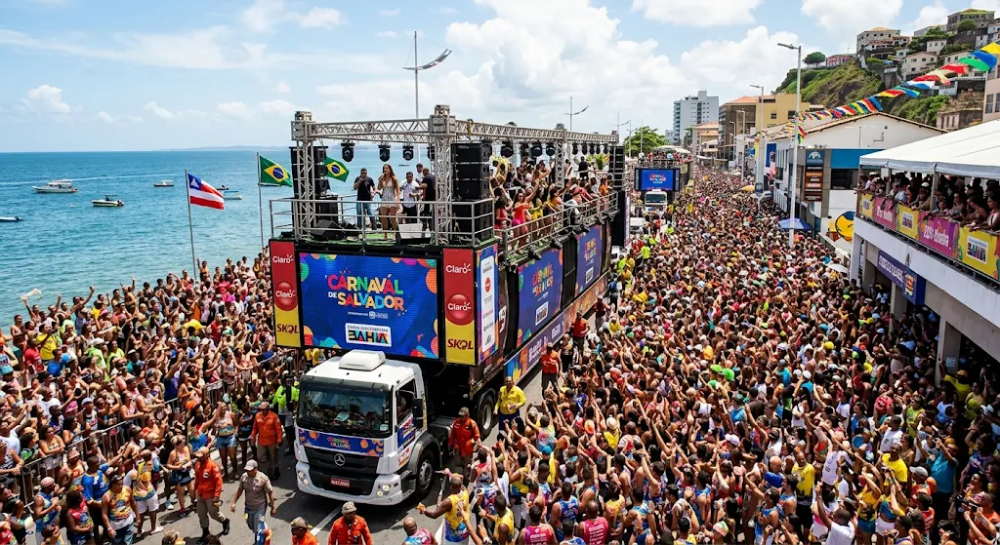
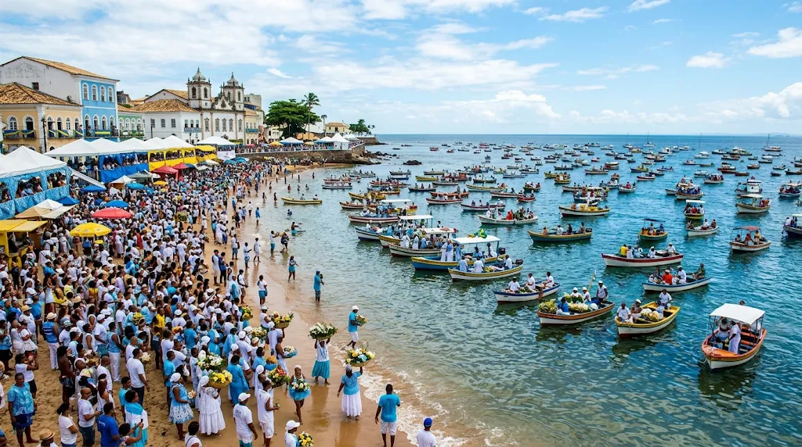
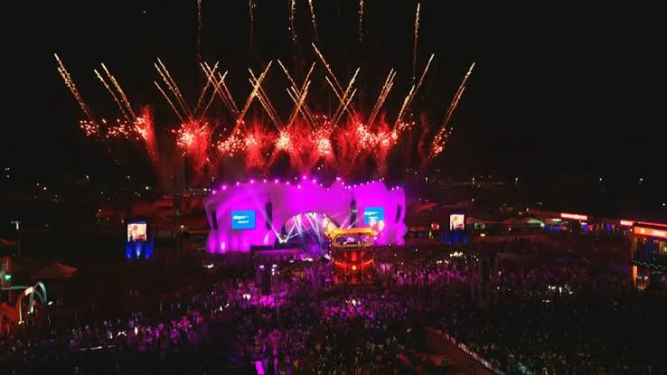
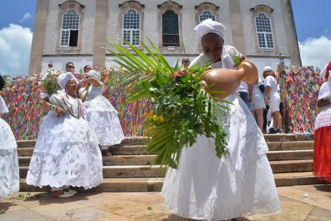

Pelourinho & Igreja de São Francisco
O coração histórico de Salvador, famoso por suas ladeiras de paralelepípedo, casarões coloniais coloridos e a deslumbrante Igreja de São Francisco, famosa por seu interior revestido de ouro.
A primeira capital do Brasil, berço da cultura afro-brasileira e de muita alegria
Salvador, a primeira capital do Brasil, é uma cidade que transborda história, axé, sincretismo religioso e uma alegria contagiante. Conhecida mundialmente por sua rica herança afro-brasileira, a soteropolitana encanta com suas ladeiras coloridas do Pelourinho, igrejas cobertas de ouro e uma culinária marcante baseada em azeite de dendê, camarão e pimenta.
Com um litoral deslumbrante banhado pela Baía de Todos-os-Santos e pelo Oceano Atlântico, Salvador oferece praias paradisíacas, pôr do sol inesquecível no Farol da Barra e manifestações culturais únicas que fazem dela um dos destinos mais vibrantes do planeta.
O coração histórico de Salvador, famoso por suas ladeiras de paralelepípedo, casarões coloniais coloridos e a deslumbrante Igreja de São Francisco, famosa por seu interior revestido de ouro.
Localizado no Forte de Santo Antônio da Barra, é um dos cartões-postais mais famosos da cidade e o ponto perfeito para contemplar o pôr do sol no mar.
Conjunto arquitetônico e cultural histórico que liga a Cidade Alta à Cidade Baixa, excelente para compras de artesanato baiano e apreciação da Baía de Todos-os-Santos.
Santuário de profunda fé e tradição, famoso pelas coloridas fitinhas do Bonfim amarradas nos portões e pela tradicional lavagem das escadarias.
Confira a estimativa de custos para voar até o Aeroporto Internacional Deputado Luís Eduardo Magalhães (SSA):
| Categoria | Tipo de Voo / Serviço | Preço Médio (Ida e Volta) | Vantagens |
|---|---|---|---|
| Econômica / Promoção | Voo com antecedência ou conexões, sem bagagem despachada | R$ 420,00 – R$ 750,00 | Excelente opção para economizar no orçamento da viagem. |
| Intermediária / Conforto | Voo direto, horários práticos, inclui bagagem de 23kg | R$ 820,00 – R$ 1.300,00 | Praticidade com voos diretos e conforto de bagagem incluída. |
| Premium / Executiva | Classe executiva / Premium com atendimento prioritário | R$ 1.650,00 – R$ 3.000,00 | Máximo conforto, acesso a salas VIP e prioridade no embarque. |

Uma das maiores festas de rua do mundo, dividida nos circuitos Barra-Ondina e Campo Grande, com trios elétricos arrastando multidões ao som de axé music, pagode e grandes artistas.

Tradicional celebração religiosa e cultural na praia do Rio Vermelho, onde milhares de fiéis vestidos de branco entregam oferendas florais e presentes ao mar para a Rainha do Mar.

Um dos maiores festivais musicais do país, reunindo grandes nomes da MPB, pop, rock e axé em megashows realizados no Parque de Exposições.

A segunda maior festa popular da Bahia, que reúne cortejos, baianas com água de cheiro e milhares de devotos caminhando da Basílica de Nossa Senhora da Conceição da Praia até a Colina Sagrada do Bonfim.